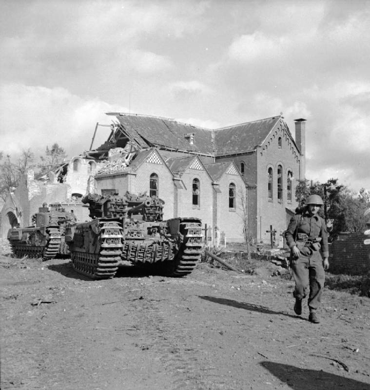
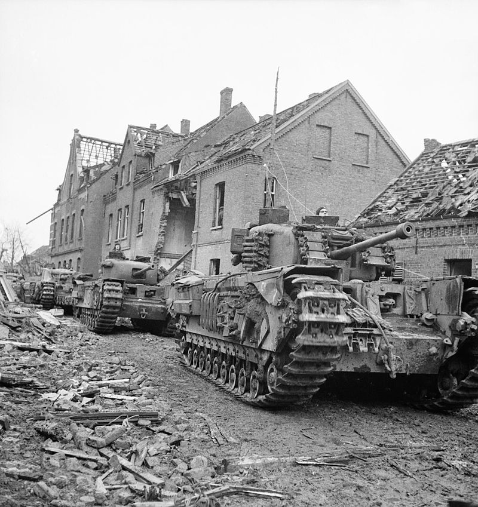

Operatie Market Garden was een offensief van de geallieerden aan het einde van de Tweede Wereldoorlog in september 1944. Het wordt beschouwd als de grootse militaire operatie op Nederlands grondgebied tijdens de Tweede Wereldoorlog. De operatie bestond uit twee delen, een grootschalige luchtlandingsoperatie (Market) en een grondoffensief vanuit België (Garden). De luchtlandingstroepen hadden als voornaamste doel om belangrijke bruggen over Nederlandse rivieren in te nemen, om vervolgens grondtroepen op te laten rukken om de rest van Nederland te bevrijden van de Duitsers.
slag om Overloon

De Slag om Arnhem was verloren door de geallieerde troepen. Die hoopten zich op in de Corridor en zochten een uitweg. Maar de Duitse troepen waren nu gewaarschuwd en groeven zich in rondom Venlo.Eerst vielen de Amerikanen aan. Die werden op 7 oktober door de Britten afgelost. Op 12 oktober brak de hel los met een beschieting door meer dan 300 Britse kanonnen. Overloon werd aan flarden geschoten. Pas toen het volledig in puin lag, begon de opmars van de Britten, die op 14 oktober in Overloon de zaak onder controle hadden.Maar het Duitse verzet was nog niet gebroken. De Britten leden zware verliezen bij de Loobeek. Het hele gebied was daar bezaaid met mijnen. Bruggenleggers kwamen er niet door. Onder moordend vuur probeerden de Britten de overkant te bereiken. De rivier kreeg de bijnaam ‘Bloedbeek’ en niet voor niks! Het duurde opnieuw enkele dagen voordat naburig Venray was bevrijd, maar op 18 oktober was de slag voorbij. Geschat wordt dat tijdens de slag meer dan duizend militairen sneuvelden en er zeker ook zo’n zelfde aantal gewond raakten.
slag om de Schelde
De Slag om de Schelde was een serie militaire operaties die in de herfst van 1944 werd uitgevoerd in het noorden van België en in de provincie Zeeland in het zuidwesten van Nederland. Na de bevrijding van de haven van Antwerpen stonden de geallieerde troepen voor de opgave om de Duitse bezettingsmacht uit de Scheldemonding te verdrijven om de aanvoerroutes van materieel en voorraden voor het geallieerde front vrij te maken. Rond dijken, dammen, ondergelopen polders en door de Duitsers zwaar versterkte dorpen en steden vonden zware gevechten plaats in dikke modder, dichte mist en stromende regen. Dit was een van de belangrijke momenten in de bevrijding van Nederland, die het einde van de oorlog dichterbij bracht, maar die veel soldaten het leven kostte.
het Rijnlandsoffensief

Volgens de geallieerden was het Rijnlandoffensief beslissend voor het winnen van de Tweede Wereldoorlog. Na het mislukken van Operatie Market Garden (waar de Slag om Arnhem deel van was) in september 1944 kwam de Britse veldmaarschalk Montgomery met een nieuw plan: het Rijnlandoffensief. Het omvatte vijf grootschalige geallieerde operaties: Veritable, Blockbuster, Grenade, Plunder en Varsity. Het doel was het veroveren van het gebied ten westen van de Rijn en het oversteken van de Rijn. Operatie Veritable, bekend als de Slag om het Reichswald, wat het begin van het Rijnlandoffensief en ging op 8 februari 1945 van start. Hiervoor werden 500.000 Britse, Canadese en Amerikaanse soldaten, duizend kanonnen en 34.000 voertuigen ingezet. De operatie verliep echter niet zo soepel. De nazi’s hadden dijken vernield, waardoor de Rijn op sommige plekken twee kilometer breed was geworden. Daarnaast was het gaan dooien, waardoor het oorlogsmaterieel muurvast kwam te zitten in de modder.
operatie Amherst
Twee afgeslankte regimenten van de Franse 'Chasseurs Parachutistes' (SAS) worden in de nacht van 7 op 8 april langs de marsroute afgeworpen om bruggen veilig te stellen, de vliegvelden bij Havelte en Eelde te bezetten, verbindingen te storen en verwarring te stichten onder de Duitsers, zodat ze geen tijd hebben de verdediging goed te organiseren.Van alle bruggen worden alleen die in Smilde en Appelscha succesvol veroverd. In heel Drenthe worden in het voorjaar van 1945 maar liefst 140 bruggen verwoest. Waar in Friesland het verzet probeert dat te voorkomen, lijkt het Drentse verzet zich daar niet echt mee bezig te houden.
slag om Delfzijl
De slag kenmerkte zich door felle en langdurige gevechten. De Zak van Delfzijl (Delfzijl Pocket) was zwaar verdedigd en werd door de Duitsers dan ook als strategisch belangrijk gezien. Dit gold echter ook voor geallieerden. De haven kon, na de bevrijding, dienen als aanvoerhaven voor voedsel om de bevolking te bevoorraden na de hongerwinter 1944-1945. Daarnaast was Delfzijl van belang om Emden te veroveren. De vier kustbatterijen in en rond Delfzijl (in Nansum, Delfzijl (twee stuks aan noordwestzijde van de haven), Fiemel/Termunten en Dollart Süd/Carel Coenraadpolder) beschermden de haven van Emden en de Eems, waardoor deze Duitse haven in potentie bedreigend bleef voor de geallieerde opmars naar Noord-Nederland en Duitsland.In totaal sneuvelden 62 Canadese militairen en raakten er 180 gewond. De verliezen aan Duitse zijde zijn onbekend.